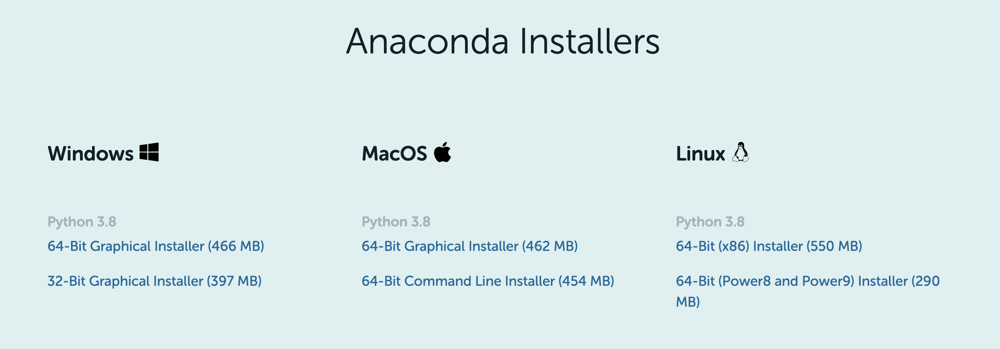

To install the packages and libraries we need for this course we will be using the Anaconda package manager, so you’ll need to install this first. First, navigate to the individual edition page and scroll down until you see the download links and select either a 32 or 64 bit installation, depending on your machine (if you’re not sure if you are on a 32/64 bit machine the easiest is probably to google your computer’s name and date along with “32 or 64”).:

NOTE: You will need the Python 3.X version (the version might be different than listed on the conda webpage).
Next, follow these installation steps to install anaconda on your computer:
NOTE: If you already have Anaconda installed you might get an error. You can simply make sure Anaconda is the most recent version by opening a Terminal (Mac) or the Anaconda Prompt (Windows) and typing conda update anaconda.
Now we will make a “stand-alone” envirnoment to do our data-viz stuff in. This is useful to make sure we install packages in a way that will not cause bad interactions.
conda create -n DataViz python=3.7 seaborn plotly pygraphviz pandas matplotlib=3.2.2 bqplot=0.12.30 numpy regex networkx openssl altair yt geopandas gdal rasterio shapely pyproj rtree fiona pillow palettable h5py contextily webcolors openpyxl ipyvolume ipyleaflet vega_datasets nltk wordcloud wget -c conda-forgeYou will then see an output that looks a bit like this:
After the “Solving Environment” step completes it will ask you if you want to install hit “y” and “Enter” or just “Enter” to complete the process.
DO NOT WORRY about the following warning messages you might see:
Solving environment: failed with initial frozen solve. Retrying with flexible solve.Solving environment: failed with repodata from current_repodata.json, will retry with next repodata source.This does not mean your installation has failed – as long as its still running let it be!
A successful installation is indicated by seeing the following:
If the install fails or there are package conflicts you can try with Python 3.8 or Python 3.9. For example to re-install with Python 3.8 the command becomes: conda create -n DataViz python=3.8 seaborn plotly pygraphviz pandas matplotlib=3.2.2 bqplot=0.12.30 numpy regex networkx openssl altair yt geopandas gdal rasterio shapely pyproj rtree fiona pillow palettable h5py contextily webcolors openpyxl ipyvolume ipyleaflet vega_datasets nltk wordcloud wget -c conda-forge
Windows users: If you have an issue with the wget command, you can install without it like: conda create -n DataViz python=3.7 seaborn plotly pygraphviz pandas matplotlib=3.2.2 bqplot=0.12.30 numpy regex networkx openssl altair yt geopandas gdal rasterio shapely pyproj rtree fiona pillow palettable h5py contextily webcolors openpyxl ipyvolume ipyleaflet vega_datasets nltk wordcloud -c conda-forge
NOTE: Here I am assuming your default browser is either Chrome or Firefox. If not, change it to one of these browsers for the duration of this class.
YOU WILL NEED TO DO THIS EVERY TIME YOU OPEN UP JUPYTER NOTEBOOK
conda activate DataViz in the terminal window/anaconda promptjupyter notebook to open the notebook from the command lineA movie of this process is shown below from a slightly older installation process (but the overall steps will remain the same, even if some of the packages are different):
A few things of note:
* is showing in the In[] part to the left of each cell this means your computer is thinking. Its best to wait until its done with one cell before moving onto the next one.bqplot plot or the ipyvolume plot there are a few tips listed – try refreshing your browser, try installing the extensions (uncomment those lines and run the cell and try running the plotting cells again), or completely close and completely re-open your jupyter notebook as discussed in section 3.1